Here are some of the more noteworthy things available in RAP 1.2 (June 24th, 2009) which is now available for download.
This list shows all bugs that were fixed.
| Jetty 6.1 and Servlet API 2.5 |
The version of Jetty that comes
packaged with RAP was updated from 5.1 to 6.1. With this change, the
Servlet API
(javax.servlet.*) was updated to version 2.5.
Please adjust your launch configurations accordingly and verify
version ranges for Import-Package and Require-Bundle directives.
For more information please see bug #258628. | |
| com.ibm.icu.base |
ICU4J is a set of Java libraries
that provides comprehensive support for Unicode, software globalization,
and internationalization. These libraries are packaged in the plug-in
com.ibm.icu (about 3MB in size)
Several plug-ins like Workbench, Forms, and JFace Databinding make use of these libraries and so do the respective RAP apdoptions. As of this milestone, RAP uses the Replacement Plug-in com.ibm.icu.base (about 100KB in size) in order to reduce the overall size of the target platform by almost 3MB.
Since all dependencies on ICU4J are expressed by |
| JavaScript Compression |
The new implementation of Javascript compression is now available. It
is enabled by default, when you use the "Standard" client-side
library variant.
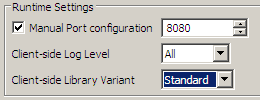 To disable Javascript compression switch to the "Debug" library variant, which sets the system propertyorg.eclipse.rwt.clientLibraryVariant
to DEBUG for the VM that is being launched.
The total size of the index page was reduced by more than 20%. For more information please also read the comments on this bug. | |
| Cursor Support |
The Control cursor support is now available. It is fully
implemented in the following widgets:
To obtain an instance of org.eclipse.swt.graphics.Cursor,
you should use code like this:
Cursor cursor = Graphics.getCursor( SWT.CURSOR_CROSS );
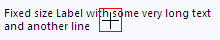 As with all resources in RWT, the Cursor instances are
shared among sessions. That's why, there is no Cursor#dispose()
method available.
| |
| Scale Widget |
Now there exists a Scale widget that works much the
same as in SWT.
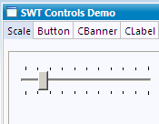 | |
| DateTime Widget |
The long awaited DateTime widget is now available. Using
the style flags SWT.DATE, SWT.TIME,
SWT.CALENDAR and SWT.SHORT, SWT.MEDIUM,
SWT.LONG you can switch the widget mode. Additionally
the DateTime widget goes by the locale from
RWT#getLocale() to display the day and month names in
your preferred language.
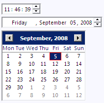 | |
| ExpandBar Widget |
RWT provides an ExpandBar control. It can be used to
represent a category or group of elements.
You may have a look at the org.eclipse.rap.demo.controls.ExpandBarTab
class in the demo plug-in to see how to use it.
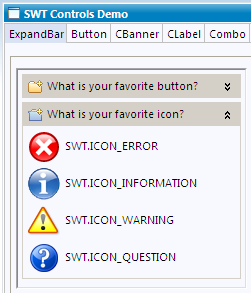 | |
| MessageBox |
With a standard SWT MessageBox you can display a message
dialog without using JFace.
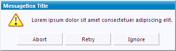 The same style flag combinations like in SWT are available:
| |
| Generic CSS Theming Engine |
With a new, entirely CSS-based theming infrastructure, RWT can now
render styles defined in CSS theme files directly.
CSS themes are no longer translated to properties internally and are
thus fully supported now.
As an example, for widgets that support the :hover state,
it is now possible to change any property on mouseover,
which has not been possible before:
| |
| Improvement of Session Startup Performance | The current version provides improvements regarding the session startup performance. First the creating of the startup page is less CPU intensive. Second the javascript library content is not embbeded in the startup page anymore. It is delivered separately. As the library content doesn't change after server start it can be zipped once and buffered. This reduces CPU usage significantly. The library is stored in the browser's cache and need not to be reloaded on subsequent application visits. | |
| qooxdoo 0.7.4 |
This milestone build includes a new version of the Javascript library
qooxdoo.
Thanks to the great support by the RAP community,
most notably from Stefan Hansel
who tracked down a number of significant memory leaks in qooxdoo and
provided patches to the qooxdoo developers,
this version now brings a major improvement in client memory
consumption.
With this qooxdoo version, the long-standing memory leakage problems
of RAP escpecially in Internet Explorer are resolved.
Thanks to everyone who helped making this possible! | |
| Slider widget |
Now there exists a Slider widget that works much the same as in SWT.
A Slider is a control that looks like a scrollbar and represents a
continuous range of numeric values.
The range can be specified by the methods #setMinimum()
and #setMaximum().
The current value can be obtained using #getSelection().
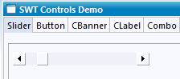 | |
| Theming |
Since the new theming infrastructure is now in place, we worked on
making more aspects of widgets themeable.
The list below details out which aspects can now be altered.
| |
| ColorDialog |
SWT's ColorDialog has been implemented for RWT.
| |
| Button widget |
The Button widget has been reworked. Now there are
custom implementations for check boxes and radio buttons The new
features are:
Button#setGrayed() is implemented for a
check box behavior that works much the same as in SWT.
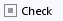
Button-RadioIcon {
background-image: url( resource/widget/rap/button/radio-unselected.png );
}
Button-CheckIcon:selected:grayed {
background-image: url( resource/widget/rap/button/check-grayed.png );
}
Button#setImage() method now works as in SWT.
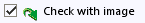 |
|
| Themeable System Images |
The system images used for SWT MessageBox and JFace MessageDialog can
now be customized via theming. These images can also be acquired from
Display#getSystemImage().
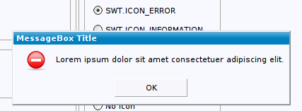 | |
| New API added |
For this milestone, we concentrated on implementing SWT API that was
still missing in RAP.
This will make it easier for the community to reuse existing code or
to utilize new features.
Here is a list of API methods added in this milestone:
| |
| CCombo widget |
Now there is a CCombo widget that works much the same as in SWT.
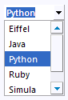 | |
| Table improvements |
The Table widget has received a lot of bugfixes and improvements during this milestone. Fonts, backgrounds and foreground colors are now supported properly for the entire table, for table items and also for single cells. Unnessesary scroll bars are not drawn anymore. Together with alternating row colors and cell padding, which had already been added in M6, the table fits much better into modern web applications. Moreover, we added some significant performance improvements. 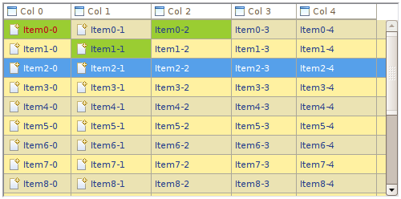 |
|
| Label theming |
The CSS property 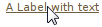 | |
| Group theming |
The foreground and background colors of the Group widget's label are now separately themeable to allow a more flexibile styling. 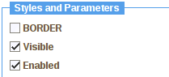 |
| FormText |
The org.eclipse.ui.forms.widgets.FormText has been
implemented in RAP. FormText is a read-only text control that is
capable of rendering wrapped text. Text can be rendered as-is or
by parsing the formatting XML tags like <p>,
<li>, <a>, <img>,
<control> and <span>.
You can use the FormToolkit to create an instance:
FormText formText = toolkit.createFormText( form.getBody(), true ); 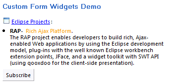 For further details please also see this bug |
| Cell Editors |
With the implementation of JFace cell editors, including all the
necessary event handling, RAP can now offer editing support for JFace
viewers.
There's still one tough issue remaining, that relates to the way the
Firefox browser handles key events.
However, the API is available and cell editors are basically working.
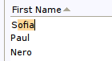 | |
| Intro support |
The org.eclipse.ui.intro extension point
provides a generic mechanism that can be used to create your own
intro support for your application. The main purpose of this extension
is to define the class that implements IIntroPart and to
specify the binding between a branding and an intro part.
As RAP does not support products as known from RCP you can use the
org.eclipse.rap.ui.branding extension point to bind your
intro to a specific branding.
For example, the following contribution defines a hypothetical intro
part to be shown by the workbench on startup:
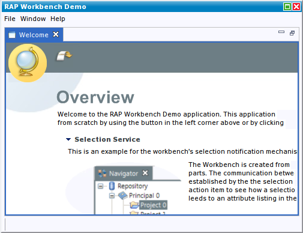 In standby mode the workbench shows the regular perspective with the intro on the right side: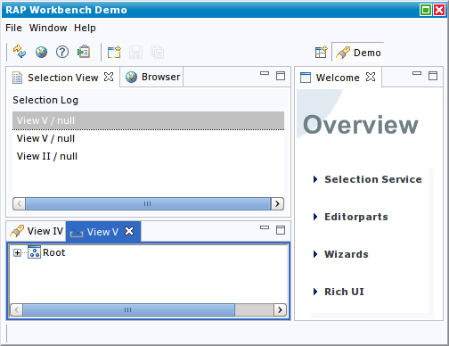 For more informations about how to use the intro extension, see Contributing a HelloWorld intro Part | |
| Databinding |
During the M6 milestone, the databinding core plug-ins were restructured.
Like its RCP counterpart, the RAP workbench has a dependency
to core databinding and thus is affected from these changes.
Effectively, two more bundles, | |
| New look and feel |
With the help of a user interface design company, we developed a new look and feel that provides a professional, serious look for RAP applications. This implementation uses the new interaction design API, which brings more flexibity to modifying the workbench presentation and allows to completely separate the styling from the application code (see the RAP help for details).
The new design is meant to demonstrate the styling capabilities of
RAP and serve as an example and a template for your application.
It is included in the plug-in
The development is not quite complete, some improvements will still be made before the release. Check out the RAP Examples Application, to see the new look and feel in action. |
| Launch without opening browser |
The RAP launcher now allows to disable the startup of a browser on
every launch. This comes in handy when working with fixed ports and
an external browser.
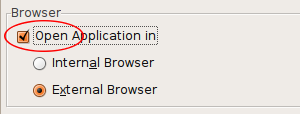 |
 Copyright © 2025 The Eclipse Foundation. All Rights Reserved.
Copyright © 2025 The Eclipse Foundation. All Rights Reserved.